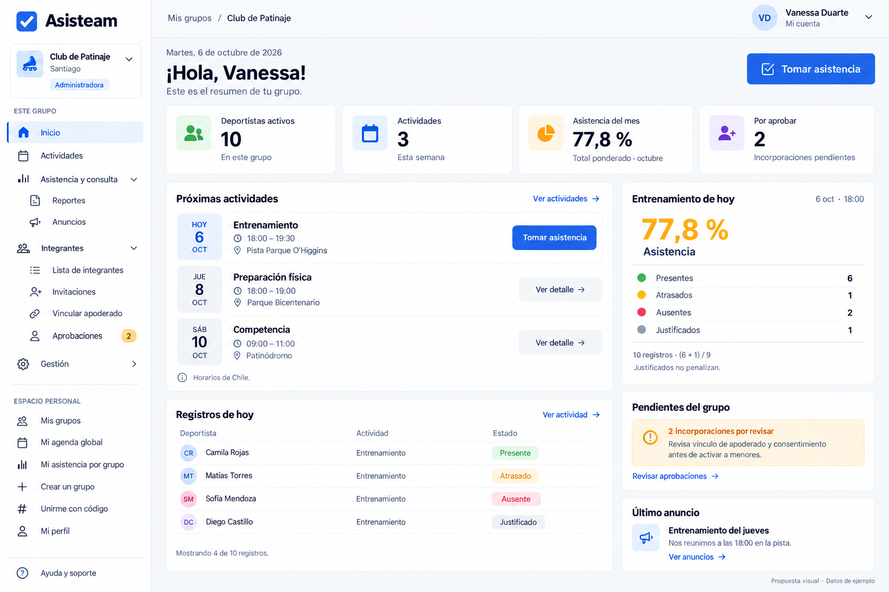
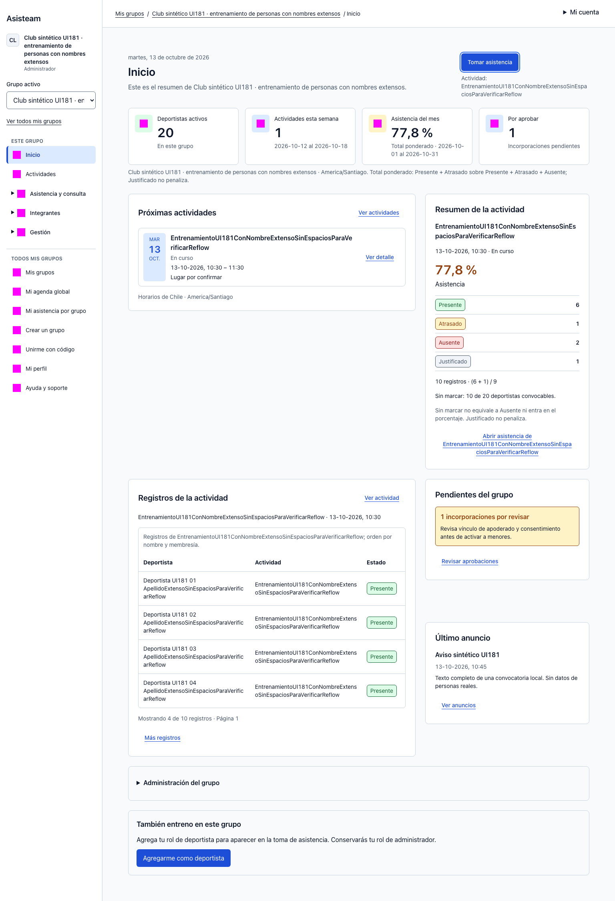
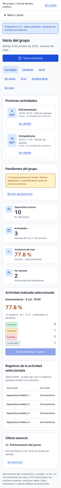
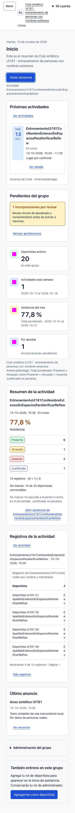
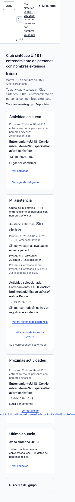

[Seguro] Capturas sintéticas del artefacto React/Nest local sobre develop@2349c3f más el diff de #181, 13-10-2026. La referencia es una propuesta de composición; no dicta permisos ni personas/cifras. Aceptación humana pendiente.
Referencia original · 1536 px
[Seguro] PNG inmutable de #170, 06-10-2026.

Producto conectado · 1536 px
[Seguro] ADMIN, grupo/actividad largos, métrica 77,8 y veinte deportistas sintéticos.

[Seguro] Sidebar/cabecera, cuatro indicadores y proporción 7:4 siguen #171; superficies planas, texto legible y ausencia de avatars inventados son decisiones canónicas.
[Seguro] Actividad en curso y selección real, período Chile y denominador 9 reemplazan la fecha/cifras ilustrativas. EXCUSED no penaliza; sin marcar se presenta separado.
[Seguro] Nombres completos amplían regiones/control. Se corrige ActionLink para dividir palabras extensas sin ocultar el nombre ni alterar destino/foco.
[Seguro] Móvil conserva actividad/acción, pendientes, indicadores, contexto y registros con scroll local. GUARDIAN/ATHLETE no reciben tabla ADMIN; sus capturas acreditan variante autorizada.
[Seguro] Las máscaras magenta protegen SVG/QR; no son parte del diseño. Axe y emulación no acreditan VoiceOver, zoom nativo ni asistencia en cancha.
Contrato móvil previo · 375 px
[Seguro] Muestra estática de #171, 10-10-2026; no producto previo.

Producto móvil · 375 px
[Seguro] Mismo fixture ADMIN de la captura desktop.

Overflow anterior · 320 px
[Seguro] ATHLETE antes de corregir el enlace, scroll global 399px.

Después · ATHLETE 320 px
[Seguro] Mismo fixture/anchura, enlace ajustable y página contenida.